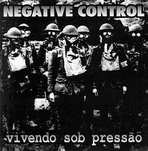

| NEGATIVE CONTROL |
o NEGATIVE CONTROL é a primeira banda a deixar a DDD em virtude do seu CD de estréia "vivendo sob pressão", lançado pela Rasura Records.
dentro do propósito principal desta distribuidora de divulgar e distribuir bandas independentes, sem contratos com gravadoras ou selos, o NEGATIVE CONTROL está um passo à frente, iniciando um progresso que espero que atinja o objetivo de seus integrantes como músicos.
espero que com minha humilde ajuda tenha contribuído na realização desse sonho.
NEGATIVE CONTROL : vivendo sob pressão - 1998 |
|
|  |
dados do cd 16 músicas 30 minutos R$ 12,00 |
"controle negativo das más influências, da ganância e do egoísmo"
comentário:
" logo na primeira ouvida já se percebe que esse não é apenas "mais um CD no mercado". ele está muito acima da média da maioria dos lançamentos dos últimos tempos. tem peso, densidade, personalidade e conteúdo. conta com várias participações mais que especiais nos vocais de vários integrantes de outras bandas. letras em português com críticas sociais diversificadas e concisas, instrumental impecável e vocal feminino brutal. hardcore irado ao extremo. "
aurelio - DDD